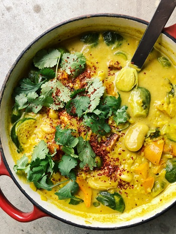

Curried Bean and Brussels Stew with Roasted Squash
Original Recipe by Amanda from Mama eats plants



Prep time: 10 minutes || Cook time: 1 hour || Total time: 1 hour and 15 minutes || Serving: 2-4 || Rating 10/10
Ingredients
- 1 cup dried beans: adzuki, giant lima, or cannellini (giant) beans, soaked in water overnight
- 1 medium kabocha, kuri, or butternut squash, chopped into bite size pieces
- 1 pound halved brussel sprouts, hard ends cut away
- 1 large sweet onion, diced
- 2 to 3 garlic cloves, crushed
- 1 tablespoon finely chopped ginger
- 4 cups baby spinach or 2 cups chopped kale/collard greens
- 3/4 cup rice
- 1 can coconut milk
- 3 tablespoons melted coconut oil, divided
- 3 to 4 bay leaves
- 2 to 3 fresh thyme sprigs, leaves separated, stalks reserved for cooking the beans
- 2 teaspoons cumin seeds, freshly ground
- seeds from 5 to 7 cardamom pods, freshly ground
- 1 tablespoon ground turmeric
- pinch of red pepper flakes
- freshly ground black pepper
- sea salt
- zest and juice of 2 limes/lemon
Instructions
-
Drain and rinse the beans, then place them in a large, heavy-bottomed pot and cover with at least 14 cups of water.
Add the bay leaved, garlic, thyme stalks, and cilantro stems, and bring the liquid to a boil over medium high heat.
Skim off any foam with a slotted spoon and reduce the heat to a strong simmer.
Cook for 20 minutes, add a pinch or two of salt, then cook for another 10 minutes or until the beans are tender and butter inside.
Check periodically to make sure the water is simmering. If the beans are not fully cooked after 30 minutes, continue cooking them until they reach the right consistency-it can take up to an hour or even longer for some beans. Drain the beans, reserving the cooking liquid in a large heatproof bowl for the base of the stew.
Discard the bay leaves and the stems. Set the beans aside, and do not wash the pot. -
While the beans are cooking, preheat the oven to 425 F.
-
Place the squash on the prepared sheet, add the thyme leave, salt, and pepper to taste, and 1 tablespoon of the coconut oil. Mix to coat using your hands. Spread in a single layer, transfer to oven, and roast for 20-30 minutes, stirring at halftime, until the squash is tender when pricked with a knife.
-
In the same pot you used for cooking the beans, warm the remaining 2 tablespoons of coconut oil over medium heat. Add the ginger and spices and stir everything around for 2 minutes, until fragrant. Add the onion and saute for 7 minutes, until it is soft and translucent.
-
Add the rice, a large pinch of salt, and the kaffir lime leaves, if using; and stir to coat. Add 7 cups of the reserved bean cooking liquid and bring the liquid to a boil. Reduce the heat to simmer, cover the pot, and cook for 20 minutes or until the rice is almost cooked.
-
Increase the heat to medium high and add the brussels sprouts, cooked beans, and a large pinch of salt. If using kale, add it at this time as well. Bring the broth back to a boil, then lower the heat and simmer, covered, for another 10 minutes until the brussels sprouts and the rice are tender.
-
Add the coconut milk, roasted squash, lime zest and juice, and more salt to taste. Bring the broth back to a gentle boil, lower the heat to a simmer, and cook for 2 minutes.
-
Remove the pot from the heat, taste the broth, and add more salt if needed. Stir in the spinach, if using. Serve hot with fresh cilantro leaves and more freshly squeezed lime juice, if desired. (I added coconut yogurt, mango chutney, and chile flakes too with excellent results. Yum!)
Tags: vegan, gluten-free, paleo, dairy-free, lunch, dinner, north american, main